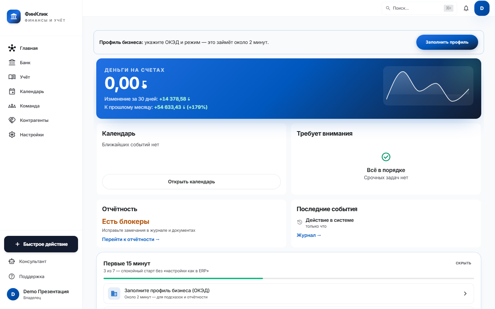
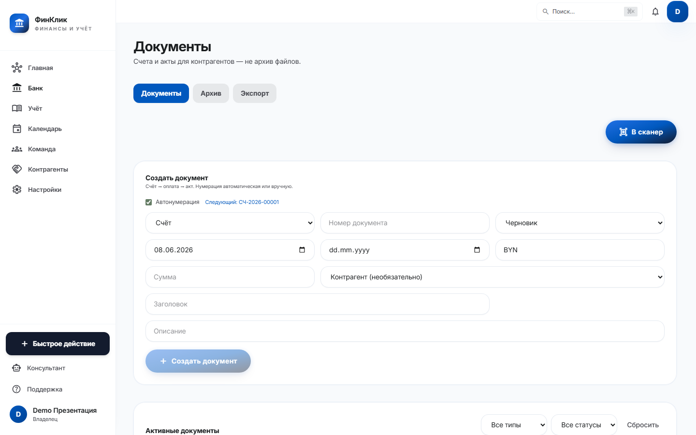
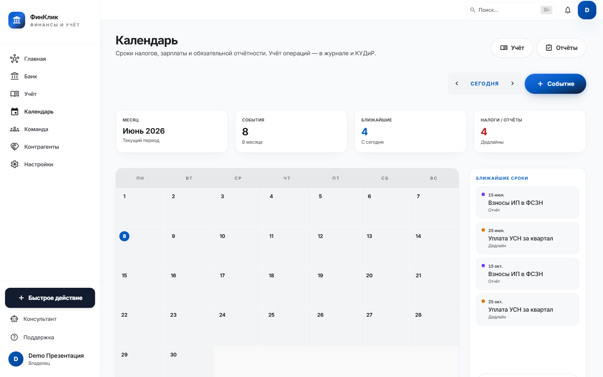
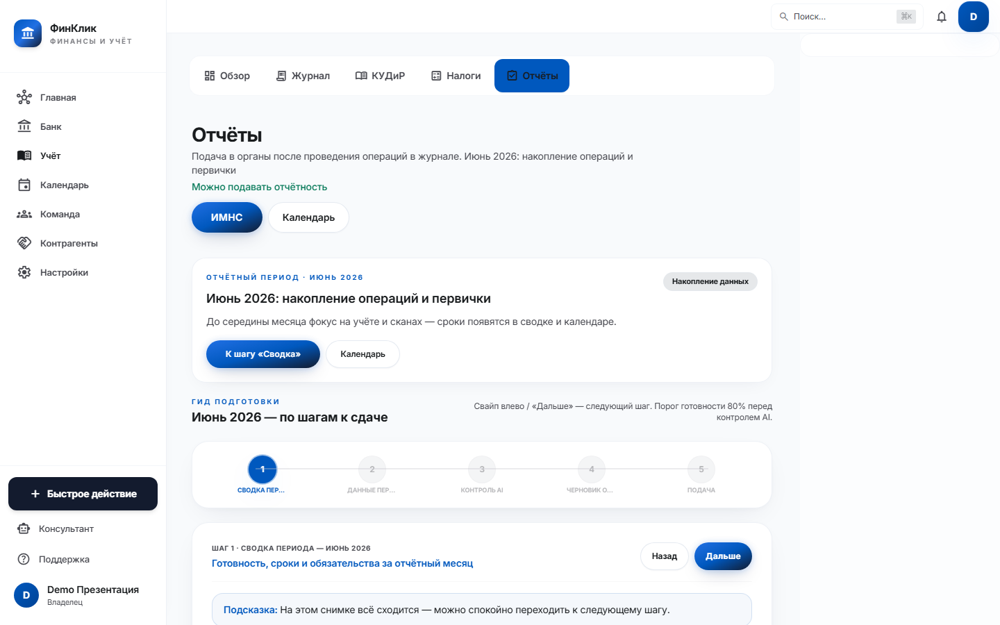
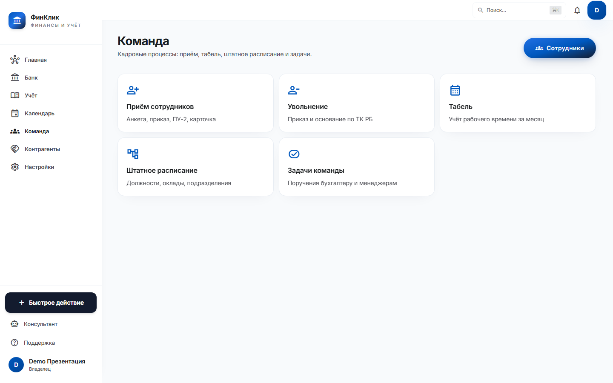
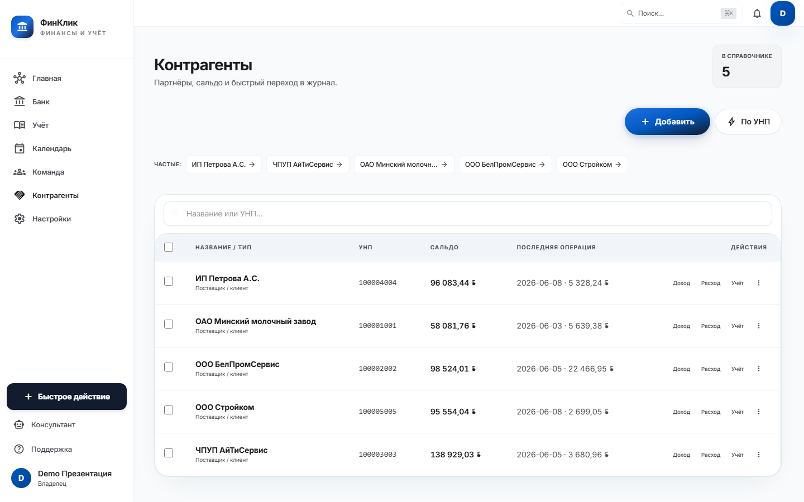
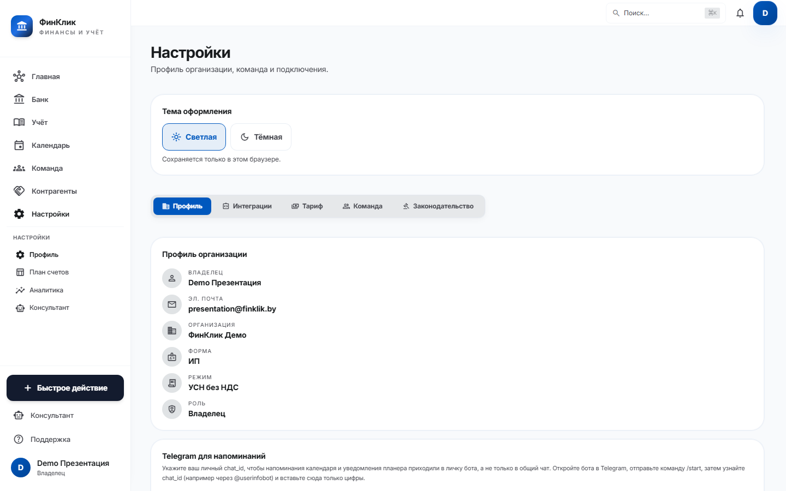
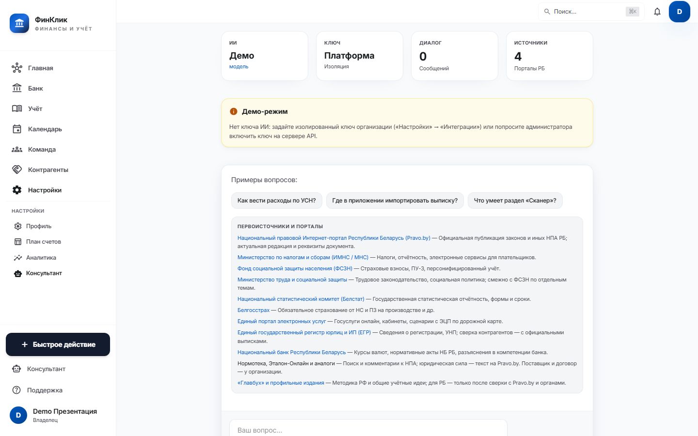

Республика Беларусь · ИП и малый бизнес
ФинКлик — учёт, налоги и отчётность в одном сервисе
Цифровой рабочий стол предпринимателя: деньги на счёте, первичные документы, кадры, сроки и подача в ИМНС и ФСЗН — без Excel и вечерней «бумажной работы».
← → · Пробел · Home / End · свайп · Ctrl+P для PDF
Проблема
4 из 5 предпринимателей ведут учёт в Excel или на бумаге
Разрозненные инструменты создают ошибки, штрафы и потерю времени — особенно когда банк, первичка, зарплата и отчётность не связаны между собой.
Ручной ввод
Чеки и выписки переносятся вручную — часы каждую неделю.
Нет ясности по налогам
Неочевидно, сколько платить УСН и ФСЗН и когда.
Риск просрочек
Сроки сдачи и уплаты легко пропустить без единого календаря.
Нет связи банк ↔ учёт
Деньги на счёте живут отдельно от отчётности.
Решение
Единая цепочка от документа до отчёта в орган
ФинКлик связывает банк, сканер, журнал операций, книгу доходов и расходов, налоги и подачу в государственные органы.
- Данные вводятся один раз — дальше система ведёт по шагам.
- Термины и формы под законодательство РБ: УСН, ИМНС, ФСЗН, УНП, BYN.
- Понятный интерфейс без бухгалтерского жаргона.
Продукт
Модули платформы
Банк
- Счёт, выписка, платежи
- Курсы НБ РБ
Учёт
- Журнал, КУДиР, налоги
- Отчёты в органы
Сканер
- OCR чеков и актов
- Автозаполнение полей
Документы
- Счета, акты, экспорт
- Импорт CSV
Календарь
- Налоги и зарплата
- Дедлайны отчётности
Команда
- Кадры и зарплата
- ПУ-2 / ПУ-3 в ФСЗН
Контрагенты
- УНП, сальдо
- История операций
Аналитика + AI
- Выручка и расходы
- Консультант по УСН
Интерфейс
Главная — деньги, сроки и готовность отчётности
Баланс на счетах, календарь, блокеры отчётности и чек-лист первых шагов — всё на одном экране.

Интерфейс
Банк — деньги и курсы Национального банка РБ
Счёт, выписка и платежи рядом с официальными курсами НБ РБ для расчётов и отчётности в BYN.

Интерфейс
Сканер — AI распознаёт первичку за секунды
Чеки, ТТН, акты и счета: загрузка, OCR, подстановка сумм и контрагентов в операцию.

Интерфейс
Документы — импорт и экспорт
CSV из банка, финансовые отчёты в PDF, выгрузка транзакций. Связка со сканером и отчётностью.

Интерфейс
Календарь — не пропустить срок
Налоги, зарплата, отчёты и встречи в одном календаре с цветовой легендой типов событий.

Интерфейс
Отчётность — ИМНС, ФСЗН, Белгосстрах, Белстат
Пошаговый сценарий: подготовка → проверка → подача → статус. Автоматическое формирование пакетов.

Интерфейс
Команда — кадры, зарплата, ФСЗН
Реестр сотрудников, начисления, ведомости и формы для Фонда социальной защиты населения.

Интерфейс
Контрагенты и настройки организации
Справочник с УНП, профиль компании, режим УСН, интеграции и законодательство РБ.


Интерфейс
AI-консультант по учёту в РБ
Ответы с опорой на правила учёта и порталы ИМНС, ФСЗН, Белстат. Подсказки по разделам платформы.

Польза для клиента
Чем ФинКлик помогает на практике
| Было | Стало с ФинКлик |
|---|---|
| Чеки в Excel | Сканер и банк заполняют данные автоматически |
| «Сколько платить УСН?» | Расчёт по фактическим операциям журнала |
| Страх просрочки | Календарь и контроль готовности отчётности |
| Зарплата в файлах | Кадры, начисления и ФСЗН в одной системе |
| Нет обзора бизнеса | Аналитика, банк и сроки на одном экране |
Особенно полезно: ИП на УСН, малый бизнес с сотрудниками, торговля с большим потоком первички, клиенты банка.
Ценность
Зачем выбирать ФинКлик
Экономия времени
Минуты на проверку вместо часов на ручной ввод — предприниматель занимается бизнесом.
Меньше штрафов
Сроки, готовность данных и прозрачная цепочка до отчёта снижают риск ошибок.
Понятность
Русский интерфейс, термины РБ, пошаговые сценарии без бухгалтерского жаргона.
Всё в одном
Банк, учёт, налоги, кадры, документы — одна платформа, одна история.
Под Беларусь
УСН, НДС, ИМНС, ФСЗН, план счетов, курсы НБ РБ — не «адаптированный» зарубежный сервис.
White-label
Для банка: ваш бренд, домен, интеграция с АБС — запуск за 4–8 недель.
Следующий шаг
Демо, пилот или white-label
Готовы показать платформу на демо-организации, запустить пилот с реальными операциями или обсудить встраивание в экосистему банка.
finklik.by · demo@finklik.by · GitHub: ptrvalina/finklik